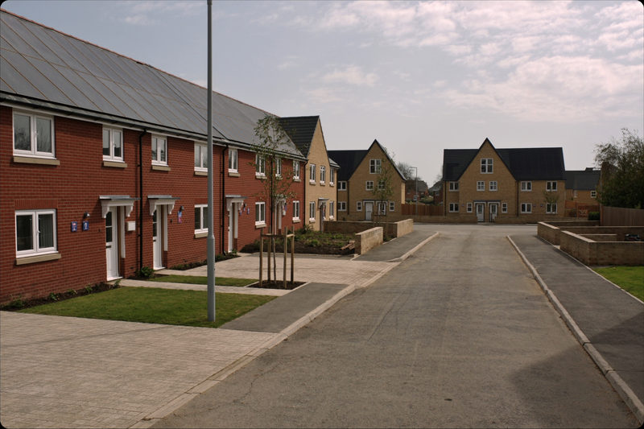
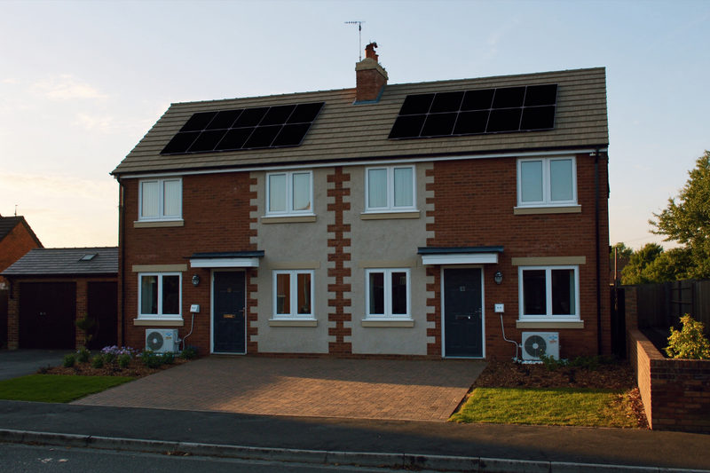

Three tools. Each answers a question before you commit a plot.
One sizes the solar and battery on a scheme and puts a number against it. One checks a house type specification against the incoming Future Homes Standard. One maps what UK council housing has installed so far.
-
01

DevelopersSee what a scheme carries before it is priced
Roof by roof solar and battery sizing across the house types on a site, with the build cost saving and the generation set against the plot count.
-
02

Future Homes StandardCheck a house type against the published standard
Four screens on the house type, the fabric, the systems in the spec and your details return a readiness summary, the gaps against the standard, and a solar and battery specification that closes them.
-
03
 Council housing
Council housingSee how far council housing has got with rooftop solar
Interactive UK map of council-owned housing rooftop solar uptake and EPC ratings, built from figures reported by UK councils on their solar installations.

Battery modelling and a grid constraint check are still in design. Each is listed here once it is ready to be used rather than looked at.
Not sure which one you need?
Send us the scheme. We will run the ones that apply and come back with the numbers.
Request a site assessment